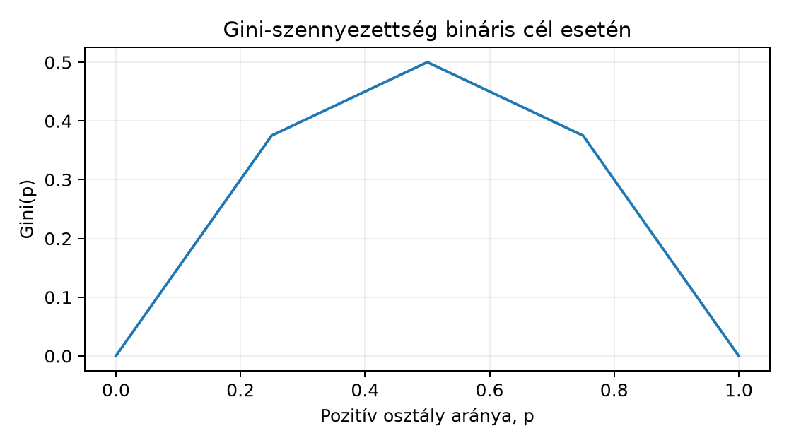

Belépő · szint: közép · idő: 60 perc · eszköz: scikit-learn
Előfeltétel: 22.1. alfejezet · Célkészség: Fák, random forest és gradiensboosting · Kimenet: működő kód és a labor ellenőrző tesztje.
A lineáris modellek után most olyan prediktorokat nézünk, amelyek nem egyetlen súlyozással, hanem egymásba ágyazott döntési szabályokkal írják le a célváltozót. Az alfejezet végére elkülönítjük a modellkapacitást, az ensemble varianciacsökkentését és a boosting iterációit, majd ugyanazon a Northstar-spliten hasonlítunk össze egy sekély fát, egy random forestet és egy hisztogram-alapú gradiensboostingot.
A feladat a rendelés pillanatában becsülni, hogy a kézbesítés
meghaladja-e a 7 napot. A megfigyelési egység egy rendelés, a cél a
target_late bináris indikátor. Csak a rendeléskor ismert
oszlopok használhatók: distance_km,
priority_flag, basket_minor,
quantity_sum, account_age_days,
segment, region,
acquisition_channel. A tanító és teszt splitet a 21.2. alfejezetben már megismert időbeli szerződés
adja: tanítóba a 2025-05-01T00:00:00+00:00 cutoff előtt
rendelt és cutoff előtt megérkezett címkéjű rendelések kerülnek, tesztbe
a cutofftól kezdődő rendelések; a kihagyott határsávot nem használjuk. A
mérési keret két metrika: ROC AUC és Brier-pontszám, mindkettő a
prediktált valószínűségből számítva.
Induló becslésként azt várjuk, hogy a max_depth=2 fa
viszonylag alacsony AUC-t és magas Brier-értéket ad, mert kevés szabályt
tud megfogalmazni; a random forest és a boosting jobb, de a Northstar
adat kevés erős jel miatt AUC-ban valószínűleg csak 0.60–0.70 között
mozog. Az alábbi konkrét számok szemléltető várakozások, nem mért
eredmények.
A döntési fa (decision tree) bináris fa: a gyökérből kiindulva minden
belső csomópont egy igen/nem kérdést tesz fel egyetlen jellemzőre,
például distance_km <= 20. A levelek (leaf) adják a
predikciót. Osztályozásnál egy levél a pozitív osztály arányával becsli
a valószínűséget.
A fa építésekor a split jóságát tisztasági mértékkel értékeljük. A Gini-szennyezettség (Gini impurity) egy elemű csomópontra:
ahol a -adik osztály aránya a csomópontban, az osztályok száma. Bináris cél esetén , így , ahol a pozitív osztály aránya. A lehetséges split súlyozott szennyezettsége:
ahol és a bal és jobb gyerek mintaszáma. A fa azt a splitet választja, amelyik a legnagyobb szennyezettség-csökkenést adja.
Kézi ellenőrzésként vegyünk hat rendelést:
| Rendelés | distance_km |
target_late |
|---|---|---|
| A | 5 | 0 |
| B | 12 | 0 |
| C | 20 | 0 |
| D | 30 | 1 |
| E | 80 | 1 |
| F | 120 | 1 |
A gyökérben
,
tehát
.
A distance_km <= 20 split balra az A–C rendeléseket
viszi (mind 0), jobbra a D–F rendeléseket (mind 1). Mindkét gyerek
Gini-értéke 0, a súlyozott Gini is 0, így a javulás 0.5. A kapott fa
mélysége 1, leveleinek száma 2.
A fa kapacitását két hiperparaméter szabályozza:
max_depth – a fa mélysége, vagyis a
gyökértől a legtávolabbi levélig vezető élek maximális száma. Mélyebb fa
több interakciót és bonyolultabb határokat tud leírni, de könnyebben
túlilleszt.min_samples_leaf – a levélben elvárt
minimális mintaszám. Nagyobb érték simább, kevésbé érzékeny leveleket
ad; ez a levélméret korlátja.A fa a jellemzőteret téglalapokra osztja, ezért nem lineáris modell,
de a becsült válaszfelület lépcsős. A max_depth=2 fa
legfeljebb
levelet hozhat létre.

Egyetlen fa nagy varianciájú becslő: ha a tanító adat kissé megváltozik, a kiválasztott splitek és a predikciók is erősen elmozdulhatnak. Az ensemble ötlete: sok fát tanítunk, és a predikcióikat átlagoljuk.
A random forest két véletlenítést használ. Először minden fát más bootstrap mintán tanít: darab, méretű visszatevéses mintát húzunk az eredeti tanító sorból. Másodszor minden splitnél a jellemzőknek csak egy véletlen részhalmazát engedjük meg; osztályozásnál tipikusan darabot. Az pontra a pozitív osztály becsült valószínűsége:
ahol a -edik fa levélbeli aránya. Az átlagolás csökkenti a varianciát, mert a fák hibái részben kioltják egymást. Ha a fák függetlenek lennének, akkor az átlag szórása lenne, de a gyakorlatban a fák korrelálnak, ezért a csökkenés kisebb. A véletlen jellemzőválasztás éppen ezt a korrelációt csökkenti.
A fontos különbség: a random forest bagging (bootstrap aggregating) típusú ensemble, minden fát teljesen felépít, és a kombinálás a végén történik. Nincs iteratív javítás.
A gradiensboosting (gradient boosting) ezzel szemben iteratív additív modellt épít:
ahol
az
iteráció utáni modell,
a tanulási ráta (learning rate),
pedig egy kis fa, amely a veszteség negatív gradiensét közelíti. Bináris
log-loss cél esetén a log-odds szerinti gradiens
,
tehát az új fa a reziduumokra illeszkedik. Minden iteráció egy kicsit
javít a hibán; a max_iter az iterációk maximális száma.
A HistGradientBoostingClassifier a scikit-learn
hisztogram-alapú megvalósítása: a jellemzőket hisztogramokba sorolja, és
a splitkeresést ezeken végzi, ami gyorsabb, mint a klasszikus
gradiensboosting. Ugyanúgy tanulási rátát, levélkorlátot és iterációkat
használ.
Az early stopping (korai leállítás) az iterációk
számának megválasztását oldd meg. A modell a tanító adatból leválaszt
egy kis belső validációs részt, például
validation_fraction=0.1, és minden iteráció után kiszámítja
a validációs veszteséget. Ha az elmúlt n_iter_no_change
iterációban nem javult, a modell visszaáll a legjobb iterációra. Ez a
validációs rész továbbra is a tanító időbeli tartományából származik; a
külső tesztet nem használhatjuk a leállításhoz, mert akkor az értékelés
optimistává válik.
A scikit-learn 1.9.1-ben a
HistGradientBoostingClassifier(early_stopping=True) belső
validációs része véletlen, nem időrendi: a
validation_fraction=0.1 arányban kiválasztott sorok a
tanítóhalmazból véletlenszerűen kerülnek ki. Időfüggő feladatnál ez a
leállítási döntésbe későbbi eseményeket is behozhat, ezért a külső teszt
érintetlen marad ugyan, de a belső validáció már nem időhelyes. A helyes
minta: a tanítóadatot időben kettévágjuk egy korábbi fit és
egy későbbi valid blokkra, a valid csak a
fit utáni időszakból jöhet, majd az iterációszámot a
valid Brier-görbéjén választjuk ki, és a végleges modellt
early_stopping=False mellett, a kiválasztott
max_iter-rel újratanítjuk:
import numpy as np
from sklearn.ensemble import HistGradientBoostingClassifier
from sklearn.metrics import brier_score_loss
assert X_valid.index.min() > X_fit.index.max(), "a validáció nem jövőbeli blokk"
search = HistGradientBoostingClassifier(
early_stopping=False, max_iter=300, learning_rate=0.08,
max_leaf_nodes=31, random_state=20261020,
).fit(X_fit, y_fit)
brier = [brier_score_loss(y_valid, proba[:, 1])
for proba in search.staged_predict_proba(X_valid)]
best_iter = int(np.argmin(brier)) + 1
final = HistGradientBoostingClassifier(
early_stopping=False, max_iter=best_iter, learning_rate=0.08,
max_leaf_nodes=31, random_state=20261020,
).fit(X_fit, y_fit)A staged_predict_proba minden iteráció után kiadja a
predikciót, így a görbe a valid blokkon számolható; a
best_iter kiválasztása nem látja a külső tesztet. A
random_state a véletlenített split kereséséhez kell, de a
split már nem használ véletlen belső holdoutot. A max_iter
és a learning_rate rögzített, csak az iterációszámot
választjuk. Ha a staged_predict_proba memóriaigénye nagy,
warm_start=True mellett iterációnként is építhető, de a
validációs blokk elkülönítése akkor is kötelező.
A következő script a lab/data/orders.csv és
lab/data/customers.csv fájlokat használja. A munkakönyvtár
a projekt gyökere, ahonnan a futtatás
uv run python lab/s086_ensemble_compare.py. A kód a splitet
az order_ts és label_available_at szerint
képzi, így a tanítóban csak olyan címkék vannak, amelyek a cutoff előtt
már megérkeztek. A kimenetek szemléltető értékek, mert a kapcsolódó
példaprojektben még nem ellenőrzött.
# lab/s086_ensemble_compare.py
import pandas as pd
from sklearn.compose import ColumnTransformer
from sklearn.pipeline import Pipeline
from sklearn.preprocessing import OneHotEncoder
from sklearn.tree import DecisionTreeClassifier
from sklearn.ensemble import RandomForestClassifier, HistGradientBoostingClassifier
from sklearn.metrics import roc_auc_score
orders = pd.read_csv(
"lab/data/orders.csv",
parse_dates=["order_ts", "actual_delivery_at", "label_available_at"],
)
customers = pd.read_csv("lab/data/customers.csv", parse_dates=["signup_date"])
orders = orders.merge(customers[["customer_id", "signup_date"]],
on="customer_id", how="left")
orders["account_age_days"] = (orders["order_ts"] - orders["signup_date"]).dt.days
cutoff = pd.Timestamp("2025-05-01T00:00:00+00:00")
train = orders[(orders["order_ts"] < cutoff) &
(orders["label_available_at"] < cutoff)]
test = orders[orders["order_ts"] >= cutoff]
feature_cols = [
"distance_km", "priority_flag", "basket_minor", "quantity_sum",
"account_age_days", "segment", "region", "acquisition_channel",
]
target = "target_late"
X_train = train[feature_cols]
y_train = train[target]
X_test = test[feature_cols]
y_test = test[target]
numeric_cols = ["distance_km", "basket_minor", "quantity_sum",
"account_age_days", "priority_flag"]
categorical_cols = ["segment", "region", "acquisition_channel"]
preprocessor = ColumnTransformer([
("num", "passthrough", numeric_cols),
("cat", OneHotEncoder(handle_unknown="ignore"), categorical_cols),
])
def make_model(name):
if name == "tree_depth2":
model = DecisionTreeClassifier(
max_depth=2, min_samples_leaf=50,
random_state=20261020,
)
elif name == "random_forest":
model = RandomForestClassifier(
n_estimators=300, max_depth=6, min_samples_leaf=20,
random_state=20261020, n_jobs=-1,
)
elif name == "hist_gb":
model = HistGradientBoostingClassifier(
max_iter=300, learning_rate=0.08, max_leaf_nodes=15,
min_samples_leaf=30, early_stopping=True,
validation_fraction=0.1, n_iter_no_change=10,
random_state=20261020,
)
else:
raise ValueError(name)
return Pipeline([("prep", preprocessor), ("model", model)])
for name in ["tree_depth2", "random_forest", "hist_gb"]:
pipe = make_model(name)
pipe.fit(X_train, y_train)
proba = pipe.predict_proba(X_test)[:, 1]
auc = roc_auc_score(y_test, proba)
brier = float(((proba - y_test) ** 2).mean())
print(f"{name:14s} AUC={auc:.3f} Brier={brier:.3f} "
f"n_iter={getattr(pipe[-1], 'n_iter_', 'n/a')}")Az elméletileg várt, nem mért kimenet:
tree_depth2 AUC=0.610 Brier=0.205 n_iter=n/a
random_forest AUC=0.650 Brier=0.195 n_iter=n/a
hist_gb AUC=0.668 Brier=0.192 n_iter=120A hist_gb utolsó oszlopa a n_iter_
attribútumból származik; mivel az early stopping megállhat a
max_iter=300 előtt, a tényleges iterációszám attól függ,
mikor állt le a belső validációs veszteség. A fa és a random forest
ilyen attribútumot nem ad, ezért ott n/a szerepel.
Kézi kontroll: a max_depth=2 fa leveleinek száma nem
haladhatja meg a
-et;
ezt a tanuló modellben pipe[-1].tree_.n_leaves_ <= 4
ellenőrzi. A random forest predikciói a fák átlagai, ezért minden érték
a
intervallumba esik. A Brier-pontszám a négyzetes hiba átlaga, ezért
mindig nemnegatív; egy nulla lenne tökéletes, a 0.2 körüli érték szerény
jelre utal. A proba shape-je (n_test,) float64
dtype, ahol n_test a teszt rendelések száma.
A várt sorrend a modellkapacitás és a varianciacsökkentés kombinációjából következik. A sekély fa csak néhány szabályt tud, ezért a legrosszabb. A random forest ugyanolyan mélységű fákat használ, de a bootstrap és a véletlen jellemzőválasztás miatt az átlag simább és stabilabb. A HistGradientBoosting iteratívan csökkenti a log-loss-t, ezért jellemzően a legjobb AUC-t adja, feltéve, hogy a tanulási ráta elég kicsi és az early stopping nem áll le túl korán.
A különbség mégsem garantált: ha az adatban alig van lineárisan megfogható jelméret, mindhárom modell hasonló lehet. Az AUC csak a sorrendiséget méri; a Brier-pontszám viszont a valószínűségek pontosságát is bünteti. Egy fa ritka levélben torzított valószínűséget adhat, ezért az ensemble Brier-értéke általában jobb. A döntési küszöböt nem optimalizáljuk a teszten; a küszöb üzleti döntés, nem az AUC része.
Az early stopping bekapcsolásakor a belső validációs veszteség a
tanító rész 10%-án számítódik. Ha az adat időben trendet tartalmaz, a
véletlen validation_fraction nem feltétlenül reprezentálja
a teszt időszakát; ezt a 23.2. alfejezetben
tárgyalt időbeli keresztvalidáció kezeli majd. Itt egyetlen split
mellett nem vonhatunk le erős állítást a modellcsaládok általános
rangsoráról.
A fák és boostingmodellek összevetésekor azonos train/validation felosztást, adatfüggetlen preprocessinget és előre kiválasztott metrikát alkalmazzunk. A hiperparaméterek teszthalmazon történő hangolása érvényteleníti a végső tesztet.
Értelmezés. A max_depth=2,
min_samples_leaf=50 fa a tanuló modellben 3 levelet hozott
létre, pedig a mélység megengedné a 4-et. Milyen mechanizmus
akadályozhatja a negyedik levél létrejöttét? Fogalmazza meg a fa három
szabályát, ha a gyökér distance_km <= 55, a bal ág
priority_flag <= 0.5 és a jobb ág
basket_minor <= 7200 volt.
Implementálás. A tanító részt belsőleg ossza
időrendben utolsó 20%-os validációs blokkra, és ezen a belső blokkon
válassza ki a max_leaf_nodes értéket a
[8, 15, 31] listából Brier-pontszám alapján. A külső
tesztet ne érintse a választás során. Írd meg a
HistGradientBoostingClassifier-rel a választó és kiértékelő
függvényt.
Hibakeresés. Egy kolléga az early stoppingot
validation_fraction=0.5 értékkel futtatta, és a
HistGradientBoosting teszt AUC-ja a várt 0.65 helyett 0.58 lett. Mi a
legvalószínűbb magyarázat? Milyen diagnosztikát nézne meg, és milyen
beállítást próbálna ki először?
Megváltozott feltétel. A szállítási hálózat
átalakítása után a teszt időszakban a distance_km mediánja
25-ről 80 km-re nő, a tanító időszak változatlan marad. Milyen minőségi
változásra számít a fa és a boosting esetén? Melyik diagnosztika mutatná
ki a problémát a modell újratanítása nélkül?
1. megoldás. A min_samples_leaf=50
korlát miatt nem jön létre olyan split, amelynek valamelyik gyereke
50-nél kevesebb tanítómintát kapna. Ezért a fa korábban megáll, mint a
mélységi maximum. A három szabály a fenti split-feltételezéssel:
distance_km > 55 és
basket_minor > 7200, akkor a levél a magasabb
target_late arányt adja;distance_km > 55 és
basket_minor <= 7200, akkor alacsonyabb arányt;distance_km <= 55 és
priority_flag <= 0.5, akkor egy harmadik arányt;priority_flag > 0.5 ág levél lenne, de a
levélméret-korlát miatt nem jött létre, ezért az a levél a
szülőcsomópont arányát örökli.A pontos szabályok persze a tanított splitektől függenek; a lényeg
az, hogy a min_samples_leaf felülírhatja a
max_depth-et.
2. megoldás. A belső validációs blokk a tanító rész utolsó 20%-a, időrendben:
split_idx = int(len(X_train) * 0.8)
X_inner_train = X_train.iloc[:split_idx]
y_inner_train = y_train.iloc[:split_idx]
X_inner_val = X_train.iloc[split_idx:]
y_inner_val = y_train.iloc[split_idx:]
best = None
best_score = float("inf")
for leaves in [8, 15, 31]:
base = Pipeline([
("prep", preprocessor),
("model", HistGradientBoostingClassifier(
max_leaf_nodes=leaves, learning_rate=0.08,
max_iter=300, early_stopping=False,
random_state=20261020,
)),
])
base.fit(X_inner_train, y_inner_train)
proba = base.predict_proba(X_inner_val)[:, 1]
score = float(((proba - y_inner_val) ** 2).mean())
if score < best_score:
best_score = score
best = leaves
print(f"Választott max_leaf_nodes: {best}, belső Brier: {best_score:.3f}")
final = Pipeline([
("prep", preprocessor),
("model", HistGradientBoostingClassifier(
max_leaf_nodes=best, learning_rate=0.08,
max_iter=300, early_stopping=False,
random_state=20261020,
)),
])
final.fit(X_train, y_train)
test_proba = final.predict_proba(X_test)[:, 1]
print(f"Teszt AUC: {roc_auc_score(y_test, test_proba):.3f}")Az invariáns az, hogy a best csak a belső validációs
blokkon számított Brier-értéken alapul. A külső teszt AUC-t csak a
kiválasztott modellen számoljuk ki. A tolerancia a Brier-pontszámnál nem
numerikus tűrés, hanem a kiválasztott max_leaf_nodes
értékkészletben szereplő egész szám.
3. megoldás. A validation_fraction=0.5
a tanító adat felét elveszi a tanulástól: a modell kevesebb adaton
tanul, a korai leállítás pedig a validációs veszteség zajos becslése
miatt túl korán megállhat, ezért alultanul. A diagnosztika: rajzoljuk ki
a belső validációs veszteséget az iterációk függvényében, és
ellenőrizzük a n_iter_ értékét. Ha az iterációszám nagyon
alacsony, például 10 alatt van, akkor a leállítás túl korai. Első
kísérletként validation_fraction=0.1 vagy 0.2,
n_iter_no_change=10, és nagyobb max_iter. A
tesztet továbbra sem használjuk a leállításhoz.
4. megoldás. A fa és a boosting is a tanult
jellemzőeloszlásra kalibrál. A távolság mediánjának eltolódása covariate
shift: a levelek olyan tartományba esnek, ahol a tanító adat ritka volt.
A fa lépcsős predikciója a régóta megtanult levélarányokat adja vissza,
ezért várhatóan túl magas vagy túl alacsony lesz a késés valószínűsége;
a boosting is torzul, mert a fák splithatárai a régi eloszlásra
optimalizáltak. A Brier-pontszám romlik, az AUC is csökkenhet.
Diagnosztika: a distance_km hisztogramjának vagy empirikus
eloszlásfüggvényének összehasonlítása train és teszt között, valamint a
prediktált valószínűségek eloszlásának változása. Ha a shift nagy, a
modell újratanítása vagy a döntési küszöb újravalidálása szükséges.
Gyakori tévedés, hogy a fa és az ensemble „immunis” a rossz
adatkezelésre, mert nem igényel skálázást. Az elméleti küszöbös döntési
fa a szigorúan monoton jellemzőtranszformációkra lényegében invariáns
(véges numerikus pontosságnál és közelítő binningnél eltérések
lehetségesek), de nem immunis a target leakage-re és az
eloszlásváltozásra. Ha például a tiltott
delivery_days oszlop véletlenül bent marad a jellemzők
között, a fa egyetlen splitet tesz rá, és a teszten is közel tökéletes
AUC-t mutat; ez szivárgás, nem modellteljesítmény. Ugyanez a helyzet, ha
a customer_id-t feature-ként adjuk át: a fa memorizálhatja
az ügyfeleket. Az eloszlásváltozás ellenpéldája a 4. feladat covariate
shiftje: a régi distance_km kvantilisekre épített split az
új tartományban hamis bizonyosságot adhat. A tanulság visszautal 21.2. alfejezetre: a preprocessing és a
modellválasztás mindig a tanító részen belül történjen, és a predikciós
időpontban ismert adatokra korlátozódjon.
Önellenőrző kérdések:
max_depth növelése elsősorban a torzítást vagy a
varianciát növeli?Válaszok: a varianciát; a fák korrelálnak; a belső tanító-validációs részen, mert a teszt használata optimista értékelést okozna.
A döntési fa kis Gini-szennyezettségű splitekkel lépcsős döntési
szabályt épít; a max_depth növeli, a
min_samples_leaf csökkenti a kapacitást. A random forest
bootstrap mintákon tanított, véletlen jellemzőválasztású fák átlagával
csökkenti a varianciát. A HistGradientBoosting ezzel szemben iteratívan
ad kis fákat a veszteség negatív gradienséhez, tanulási rátával és belső
validáción alapuló early stoppinggal. A Northstar laborban mindhárom
modellt ugyanazon időbeli spliten, AUC-val és Brier-pontszámmal
hasonlítjuk össze; a boosting várhatóan jobb, de a különbséget validálni
kell. Következő lépésként 22.3. alfejezetben a
távolságalapú modelleket és azok méretkorlátait vizsgáljuk.